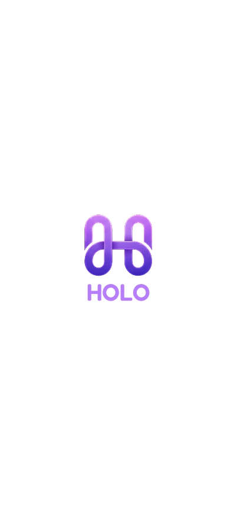
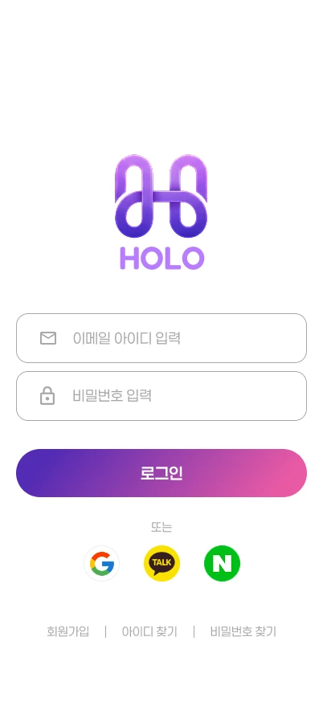
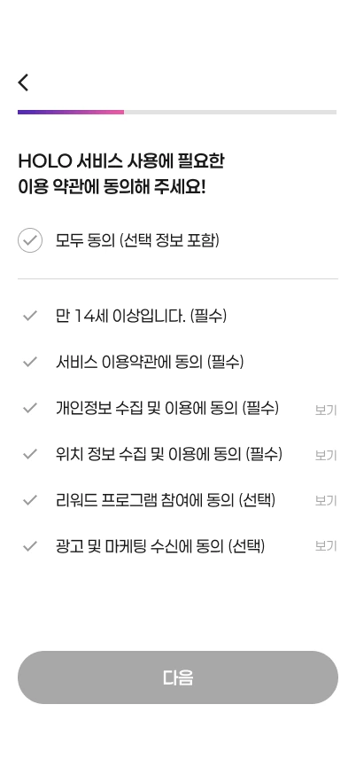
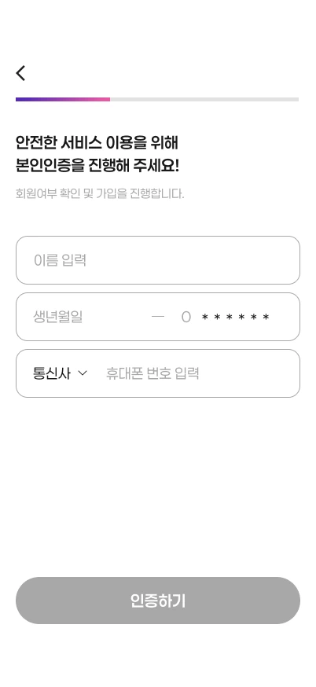
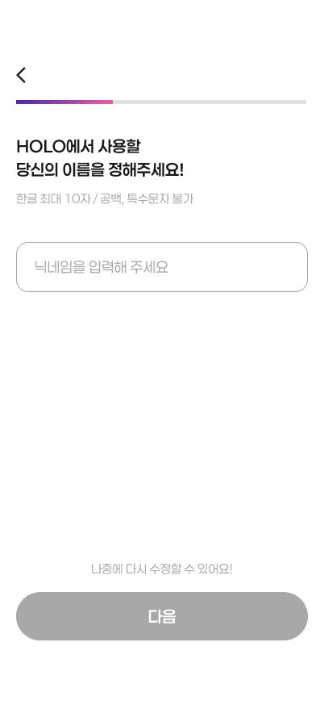
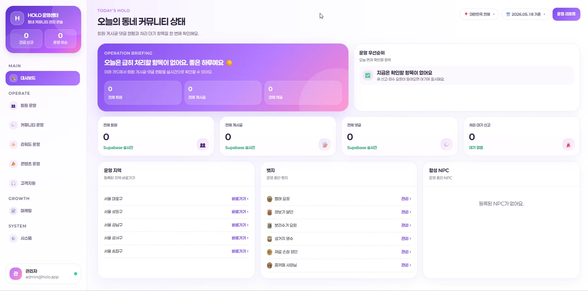
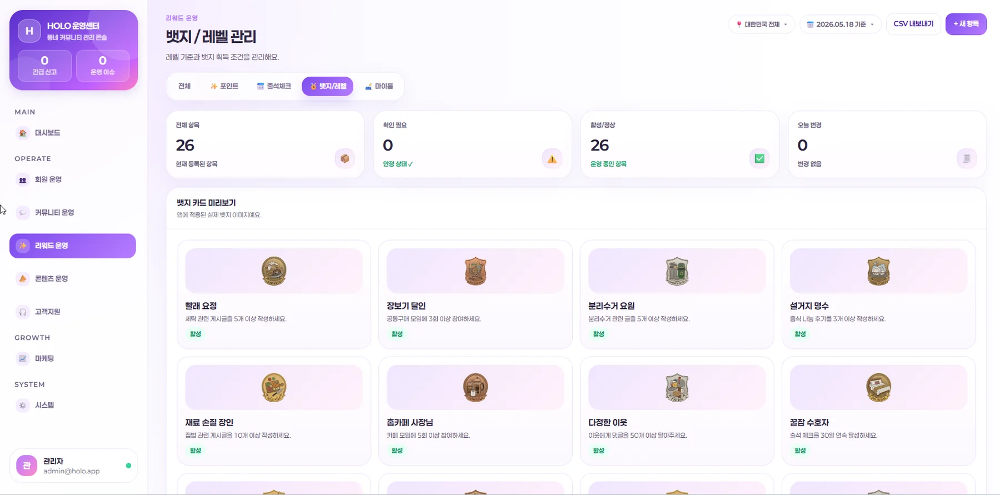
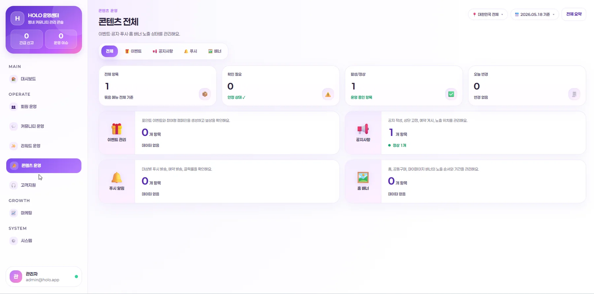

01Overview
혼자를 위한, 그러나 함께 하는 동네 커뮤니티
HOLO는 1인 가구가 가까운 이웃과 안전하게 연결될 수 있도록 지역 인증과 게임화 요소를 결합한 지역 기반 소셜 커뮤니티 앱입니다.
배달·공동구매, 생활 품앗이, 취미 모임까지 — 혼자 하기 어려운 일을 이웃과 나눌 수 있게 돕고, 레벨·뱃지·마이룸 꾸미기 같은 게임화 장치로 지속적인 참여를 이끌어냅니다.
02Background & Research
60명 설문으로 확인한 1인 가구의 진짜 니즈
1인 가구·예비 독립 사용자 60명을 대상으로 설문(2026.04.24–04.30)을 진행했습니다. 응답자는 20대 83%, 여성 70% 중심으로, 배달·공동구매부터 안전한 이웃 연결까지 구체적인 니즈가 드러났습니다.
- 경제적 니즈배달비 분담·소분 공동구매가 가장 큰 기대 기능(46%). 단, 소분 시 41%가 "정확한 금액 정산"을 우려.
- 신뢰·안전이웃에게 도움을 요청할 때 가장 큰 걱정은 "신원 미확인에 따른 안전 불안" → 본인·지역 인증과 매너 온도의 필요성.
- 참여·재미64%가 마이룸 꾸미기에 긍정적, 41%는 "미션 달성 시 실제 할인 쿠폰" 보상을 기대 → 게임화의 근거.
- 도출한 방향경제적 혜택 + 안전한 연결 + 가벼운 재미를 동시에 → 지역 인증 × 게임화라는 HOLO의 차별점.
03Concept
지역 인증으로 신뢰를 만들고, 게임화(레벨·뱃지·마이룸)로 참여를 유지하는 동네 커뮤니티.
라벤더 퍼플 × 핑크 그라데이션과 3D 아이소메트릭 룸, 둥근 pill UI로 친근하고 부드러운 무드.
04Design Guide
퍼플·핑크로 짜인 하나의 시스템
팀과 함께 컬러·타이포·컴포넌트 토큰을 먼저 정의하고 담당 화면 전반에 반복 적용해, 30개가 넘는 화면이 하나의 서비스처럼 보이도록 일관성을 유지했습니다.
혼자지만 함께라는 정서를 신뢰 · 재미 · 연결로 풀어, 친근하고 부드러운 무드를 모든 화면의 기준으로 삼았습니다.
딥 퍼플에서 핑크로 흐르는 holo 그라데이션을 중심으로, 라일락 소프트 톤을 배경·카드에 얹어 밝고 친근한 무드를 구성했습니다.
Fredoka로 로고·대형 타이틀을, Paperlogy로 화면 타이틀을, 본문·랜딩은 Pretendard로 조합해 브랜드는 강하게·정보는 명확하게 보이도록 했습니다.
Radius 토큰(tile·input·card·pill)과 4종 버튼, 상태 chip을 규칙으로 정의해 화면마다 같은 UI 언어를 반복했습니다.
05My Contribution
내가 맡은 온보딩 · 마이페이지 · 관리자
팀 4인 프로젝트에서 나는 사용자가 처음 진입하는 온보딩, 활동이 보상으로 쌓이는 마이페이지(게임화), 운영을 위한 관리자 페이지 — 세 영역을 디자인했고, 백엔드 연결·세부 QA 전까지 React 기반 화면을 직접 구현했습니다. 단순 시안이 아니라 실제로 동작하는 화면으로 만드는 데까지 참여했습니다.
스플래시부터 관심사 선택까지, 인증 기반의 안전한 시작과 낮은 진입 장벽을 동시에 잡은 6단계 흐름을 설계하고 구현했습니다.





레벨·뱃지·칭호 시스템을 구현해 "활동이 곧 보상"으로 보이도록 구성하고, 마이룸 꾸미기·출석 보상으로 지속적인 참여를 유도했습니다.
대시보드·회원/커뮤니티/리워드/콘텐츠 운영·시스템 로그까지, 서비스를 실제로 굴리는 백오피스(운영센터) 전체를 제작·구현했습니다.



퍼플·핑크 컬러 토큰과 pill 컴포넌트, 상태 chip을 팀과 함께 정의해 담당 화면 전반의 일관성을 유지했습니다.
06Build
디자인에서 멈추지 않고, 동작하는 화면까지
담당 화면을 React 기반 프론트엔드로 직접 구현했습니다. 특히 긴 와이어프레임과 프롬프트 문서를 직접 작성해 Claude로 UI를 구현하고, "수정 → 배포 → 브라우저 테스트 → 실패 시 롤백" 루프로 검증하며 완성도를 끌어올렸습니다.
React 기반 화면 구현
React · Vite · TypeScript · Tailwind로 온보딩·마이페이지·관리자 화면을 실제 동작하는 UI로 구현했습니다.
AI 활용 개발 워크플로우
와이어프레임·프롬프트 문서를 길게 설계해 Claude로 화면을 구현하고, 배포–테스트–롤백 루프로 결과를 직접 검증했습니다.
Supabase 데이터 연동
Auth·PostgreSQL·Storage를 활용해 로그인/권한과 마이룸 레이아웃(jsonb) 저장 등 데이터 흐름을 구성했습니다.
관리자 백오피스
대시보드·회원·커뮤니티·리워드·콘텐츠·시스템까지 6대 운영 메뉴를 갖춘 관리자 콘솔을 제작했습니다.
07Challenges
구현하며 부딪힌 문제들
PROBLEM테스트 환경 없이 실서비스 DB에서 바로 작업해야 했다.
해결 → 테스트 계정 기반으로 "수정 → 배포 → 브라우저 테스트 → 실패 시 롤백" 단계별 검증 루프를 만들고, 멱등(if not exists) SQL과 롤백 SQL을 함께 두어 각 변경을 별도 커밋으로 관리했습니다.
PROBLEM마이룸을 3D로 만들자니 제작비·보안 부담이 컸다.
해결 → 3D 모델 대신 2.5D 아이소메트릭 PNG를 사용하고, 미리 검수된 가구만 선택하도록 제한해 제작비를 낮추면서 안전성을 확보했습니다.
PROBLEM게임화(레벨·뱃지·칭호)를 한눈에 이해되게 보여줘야 했다.
해결 → "활동이 곧 보상"으로 보이도록 레벨·뱃지·칭호·출석 보상을 하나의 시각 시스템으로 묶어 마이페이지에서 진행 상황이 즉시 읽히도록 구성했습니다.
PROBLEM운영에 필요한 정보가 많아 관리자 화면이 과밀해지기 쉬웠다.
해결 → 회원·커뮤니티·리워드·콘텐츠·시스템으로 6대 운영 메뉴를 정보 구조화해, 실제 서비스를 굴리는 백오피스를 한눈에 다룰 수 있게 했습니다.
08Results
숫자로 보는 작업
09Final Output


—Review
배운 점
화면 하나가 아니라 사용자의 흐름 전체와 운영까지 고민했습니다. React 구현부터 Supabase 연동·Vercel 배포까지 실제로 동작하는 서비스를 만들며, 게임화를 시각적으로 풀어내는 디자인 시스템의 중요성을 크게 배웠습니다.
아쉬운 점
실제 백엔드 API 연동을 끝까지 완료하지 못했고, 초기 디자인 구현 단계에서 시행착오가 있었습니다. 다양한 디바이스 테스트가 수동 QA에 의존해 실사용 데이터로 검증하기엔 한계가 있었습니다.
개선 방향
React Native로 실제 네이티브 앱으로 확장하고, 웹 접근성 개선과 프론트엔드 성능 최적화, 보안 강화를 통해 실서비스에 더 가까운 완성도로 발전시키고 싶습니다.
마이페이지와 온보딩, 관리자 페이지를 맡으며 화면 하나가 아니라 사용자의 흐름 전체와 운영까지 고민하는 경험을 했습니다. 디자인에 그치지 않고 직접 구현하며, 완성도와 일정 관리의 중요성을 배웠습니다.